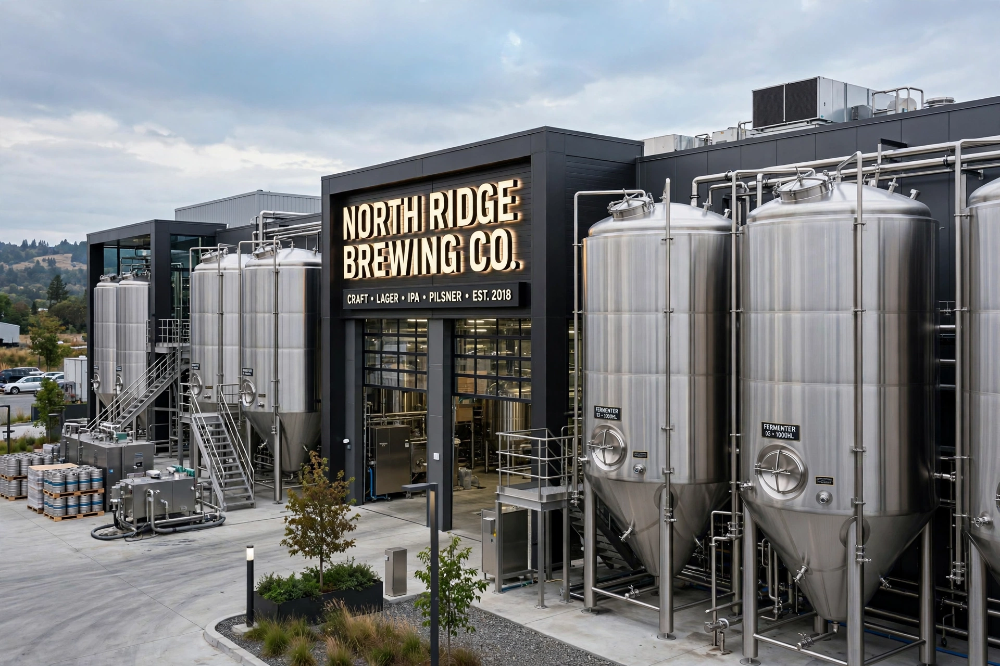

AB InBev

| Type | Public (Euronext Brussels: ABI; NYSE: BUD) |
|---|---|
| Industry | Beverages (brewing) |
| Formed | 2008 (merger of InBev and Anheuser-Busch) |
| Headquarters | Leuven, Belgium |
| Key brands | Budweiser, Corona, Stella Artois, Michelob Ultra, Modelo |
| Position | World's largest brewer by volume and revenue |
Anheuser-Busch InBev SA/NV, commonly known as AB InBev, is a Belgian multinational drink and brewing company headquartered in Leuven, Belgium. It is the world's largest brewer, with roughly a quarter to a third of the global beer market and a portfolio of more than 500 brands.
Formation
AB InBev was created in 2008 when the Belgian-Brazilian brewer InBev acquired the American brewer Anheuser-Busch for about $52 billion. InBev itself had been formed in 2004 by the merger of Belgium's Interbrew — whose roots run back to the Den Hoorn brewery of 1366 and Stella Artois — with Brazil's AmBev.
Expansion
The company continued consolidating the industry, buying Mexico's Grupo Modelo (maker of Corona) in 2013 for about $20 billion, and in 2016 completing a takeover of SABMiller for roughly $100 billion, one of the largest corporate mergers in history. To satisfy regulators it divested brands including Peroni, Grolsch and MillerCoors' U.S. interests. AB InBev is known for the aggressive cost-cutting management style of the Brazilian investment firm 3G Capital, an early backer of its predecessor companies.
Operations
AB InBev operates in nearly 50 countries, employs well over 150,000 people, and sells beer under global brands Budweiser, Corona and Stella Artois along with hundreds of local labels. Its functional management office is in New York City, and its shares are listed in Brussels, New York, Mexico City and Johannesburg.
See also: Anheuser-Busch · SABMiller